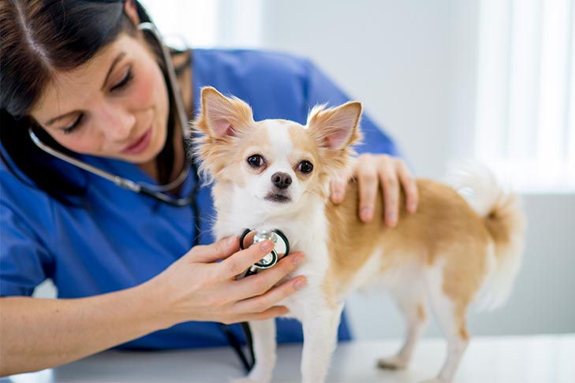

La santé du chien
Prendre soin de la santé de son chien est essentiel pour lui offrir une vie longue, heureuse et équilibrée. Il est recommandé de consulter un vétérinaire au moins une fois par an, ou deux fois si le chien est âgé, afin d’effectuer un bilan de santé complet. Les vaccinations de base (contre la maladie de Carré, la parvovirose, l’hépatite, la leptospirose et la rage) doivent être tenues à jour, tout comme les vermifugations, qui doivent être réalisées tous les mois pour les chiots, puis plusieurs fois par an à l’âge adulte. Il est également indispensable de traiter son chien régulièrement contre les puces et les tiques, avec des produits adaptés. L’entretien général ne doit pas être négligé : les yeux, les oreilles, les dents, les griffes et le pelage doivent être surveillés et nettoyés selon les besoins. Une alimentation équilibrée, adaptée à son âge, à son poids et à son niveau d’activité, est primordiale pour prévenir l’obésité et maintenir une bonne santé. Le bien-être mental est aussi crucial : un chien épanoui doit être stimulé, entouré, et éduqué avec bienveillance. En cas de comportement anormal, de vomissements, de fatigue inhabituelle ou de blessure, une visite d’urgence chez le vétérinaire s’impose. Enfin, tenir à jour un carnet de santé et envisager une assurance santé animale permet d’anticiper les soins nécessaires tout au long de la vie du chien.
Le toilettage du chien

Le toilettage est bien plus qu'une question d’esthétique : il contribue au bien-être et à la santé du chien. Chaque race a des besoins spécifiques, mais un brossage régulier est essentiel pour éviter les nœuds, éliminer les poils morts et aérer la peau. Les chiens à poil long doivent être brossés plusieurs fois par semaine, voire tous les jours, tandis que ceux à poil court nécessitent un entretien moins fréquent. Le bain peut être donné toutes les 4 à 8 semaines avec un shampoing adapté aux chiens, en prenant soin de bien rincer pour éviter les irritations. Il faut aussi vérifier régulièrement les oreilles (surtout chez les races aux oreilles tombantes) pour prévenir les infections, nettoyer les yeux en cas d’écoulement, tailler les griffes si elles deviennent trop longues, et brosser les dents pour éviter le tartre et les maladies bucco-dentaires. Un toilettage régulier permet aussi de détecter précocement des problèmes de peau, des parasites ou des blessures. En plus de renforcer le lien avec son maître, le toilettage procure au chien une sensation de confort et de propreté indispensable à son équilibre.
Une alimentation équilibrée

Une bonne alimentation est la base de la santé d’un chien. Elle doit être adaptée à son âge, sa taille, sa race, son niveau d’activité et son état de santé. Les chiots ont besoin de nourriture riche en protéines et en énergie pour bien grandir, tandis que les chiens adultes nécessitent un équilibre entre apports énergétiques et maintien du poids. Les chiens âgés, quant à eux, bénéficient d’une alimentation allégée et enrichie en nutriments pour soutenir leurs articulations et leur système immunitaire. Il est recommandé d’opter pour des croquettes ou pâtées de qualité vétérinaire, bien dosées, et d’éviter les restes de table ou les aliments toxiques (comme le chocolat, les oignons ou les raisins). L’eau fraîche doit toujours être disponible en abondance. Il faut surveiller le poids de son chien régulièrement pour prévenir l’obésité, fréquente chez les chiens peu actifs ou suralimentés. Enfin, certains chiens peuvent avoir besoin d’un régime spécifique en cas d’allergies, de troubles digestifs ou de maladies chroniques, auquel cas un vétérinaire pourra recommander un aliment médicalisé.